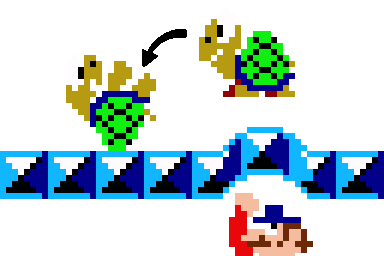
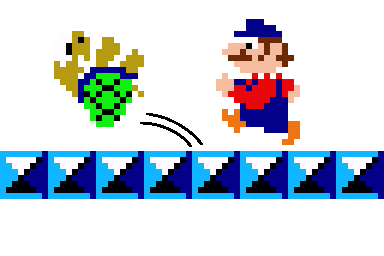
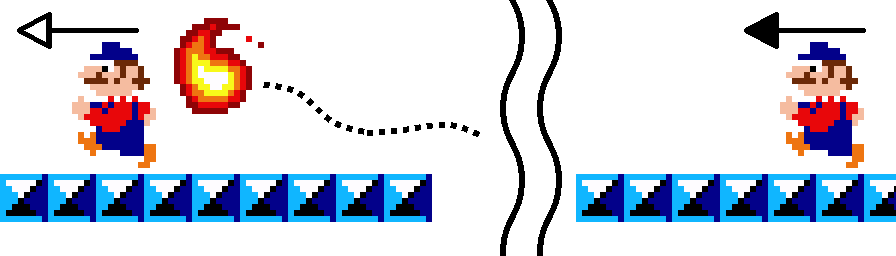

Introduction
Description
Mario Bros. (マリオブラザーズ, Mario Burazāzu?) est un jeu d'arcade développé et édité par Nintendo en 1983. Il a été conçu par Shigeru Miyamoto comme la suite de Donkey Kong, avec lequel il constitue un des premiers jeux de plates-formes jamais créés. Le jeu met en scène le plombier Mario — dénommé « Jumpman » auparavant dans Donkey Kong — qui doit, avec son frère Luigi, combattre des créatures apparaissant dans les égouts de New York.
Boudé des salles d'arcade à sa sortie, Mario Bros. trouve le succès en 1986 avec sa réédition sur Nintendo Entertainment System (NES) en se vendant à plus de 2,27 millions d’exemplaires dans le monde sur cette seule console. Le jeu a depuis été réédité sur de multiples plates-formes, notamment sur Game Boy Advance, ce qui lui valut des critiques lassées de la presse spécialisée, qui loue néanmoins l’efficacité du gameplay.
Source : Wikipedia
Historique
Il existe de nombreuses version de Mario Bros. disponibles sur plusieurs plate-formes :
| Plates-formes | Dates de sortie |
|---|---|
| Arcade |
|
| NES |
|
| Atari 2600 |
|
| Atari 5200 |
|
| PC-8001 |
|
| Nintendo PlayChoice-10 |
|
| Amstrad CPC |
|
| Commodore 64 |
|
| ZX Spectrum |
|
| Atari 8-bit |
|
| Atari 7800 |
|
| e-Reader |
|
| Game Boy Advance |
|
| Virtual Console (Wii) |
|
| Virtual Console (3DS) |
|
| Virtual Console (Wii U) |
|
| NES Classic Edition |
|
| Nintendo Switch (Arcade Archives) |
|
| Nintendo Entertainment System - Nintendo Switch Online |
|
Source : Super Mario Wiki
Manuel
Objectif
Le joueur doit vaincre les ennemis. Il doit pour ce faire frapper sous la plate-forme de l'ennemi ciblé en sautant depuis l'étage inférieur, et ainsi le retourner sur le dos. L'ennemi est alors vulnérable et il suffit de le toucher pour l'éliminer. Si le joueur n'élimine pas un ennemi vulnérable assez rapidement, celui-ci repart, sa couleur change et sa vitesse augmente. Un ennemi peut changer et augmenter sa vitesse par deux fois.
- Un ennemi est vulnérable après un saut.
 - Vous pouvez ensuite l'envoyer valser.
 - Additionnellement il est possible marcher à gauche de l'écran pour ressortir à droite et inversement.

Contrôles
- (Flèche gauche / Flèche droite) : Bouger.
- (Espace) : Sauter.